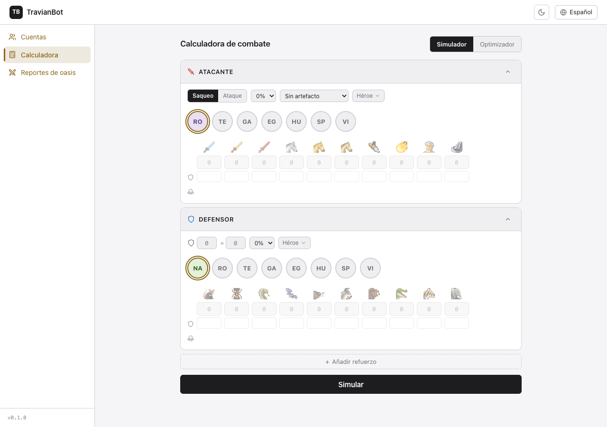
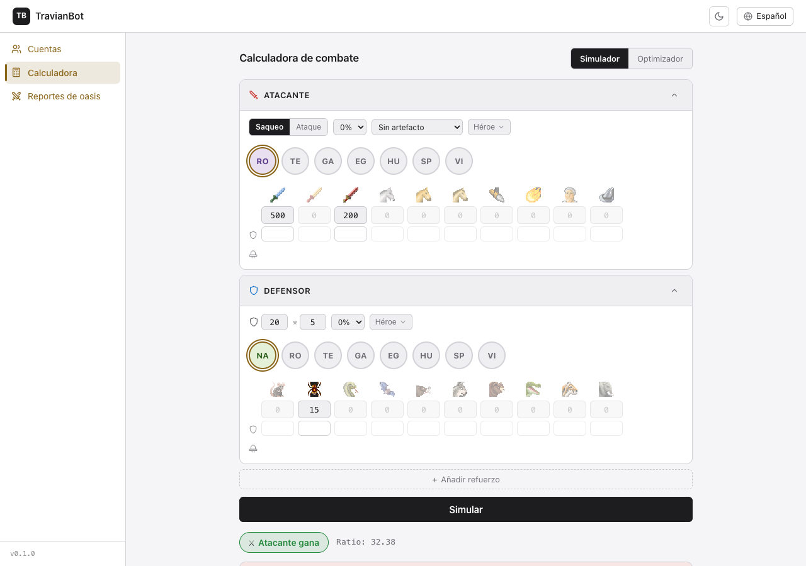
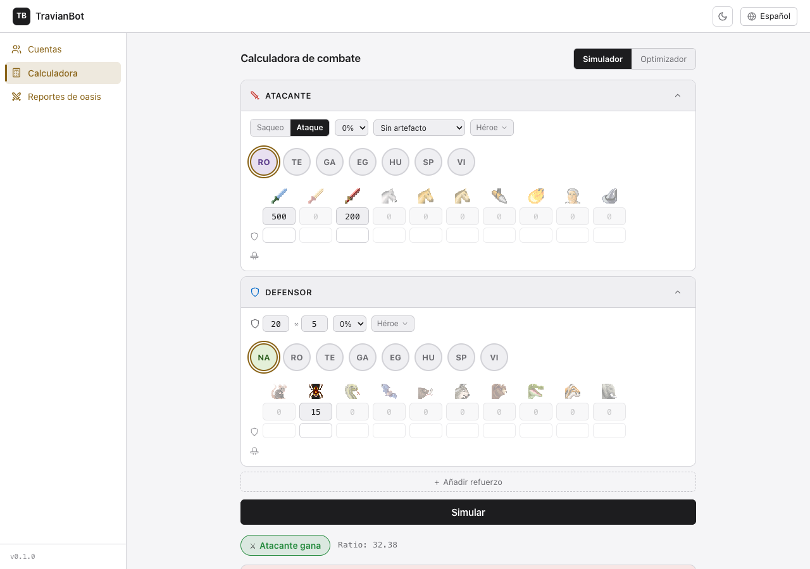
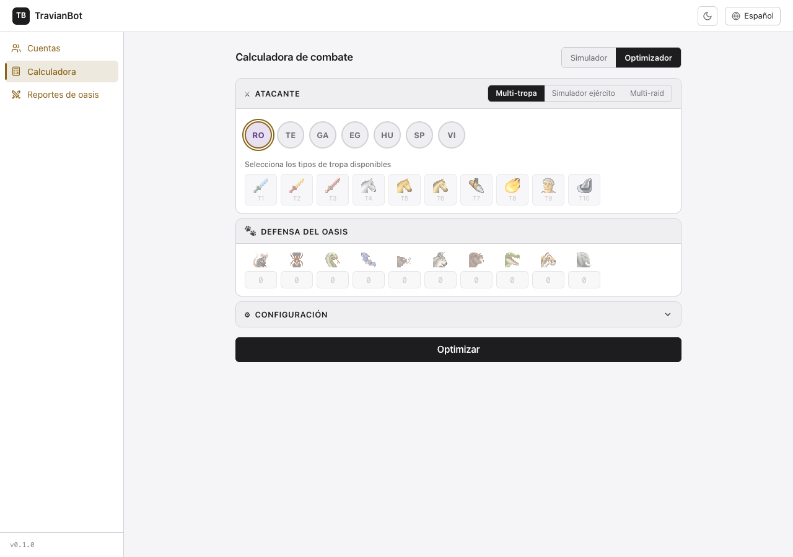
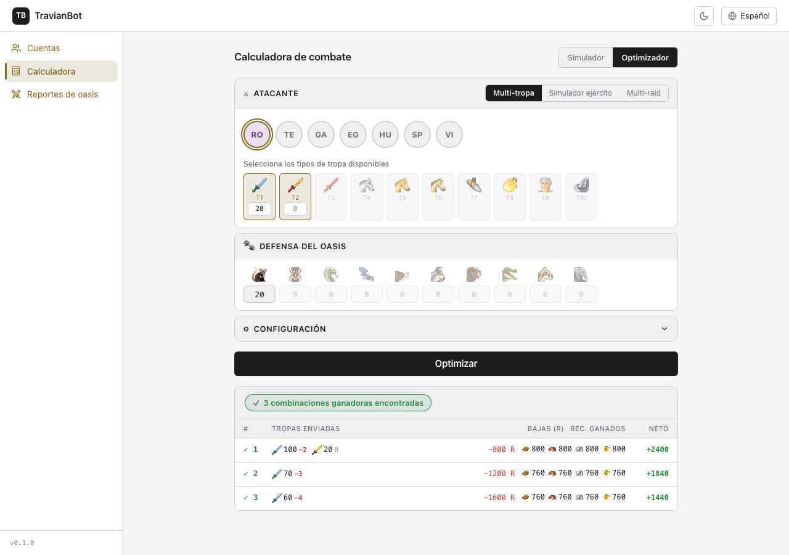
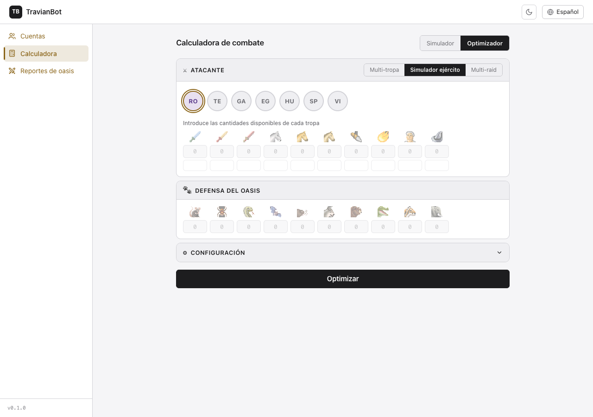
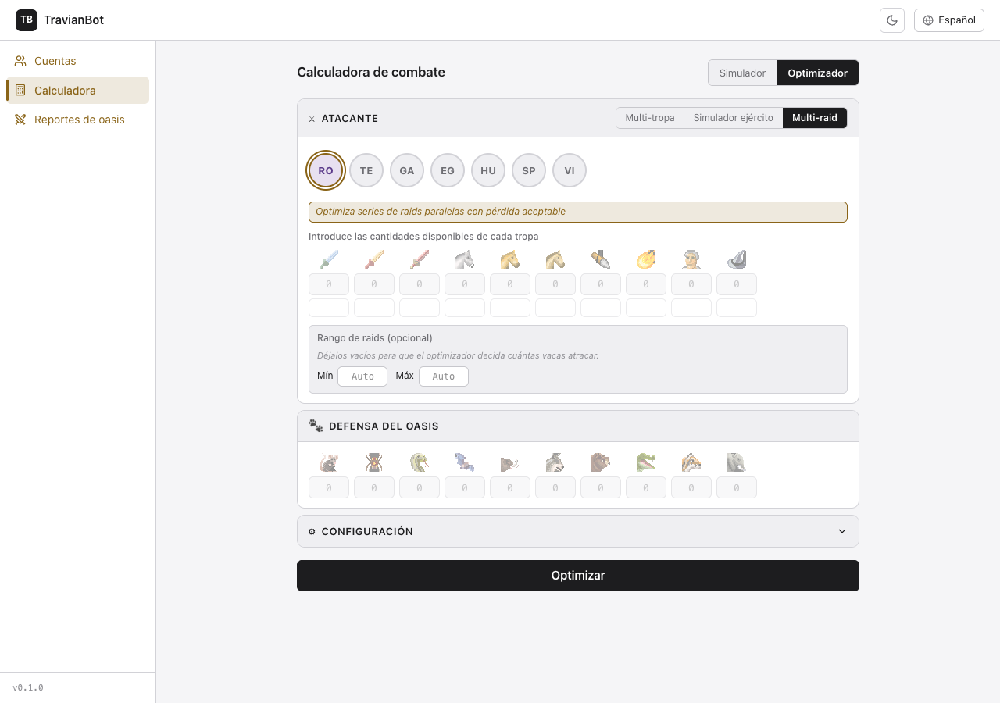
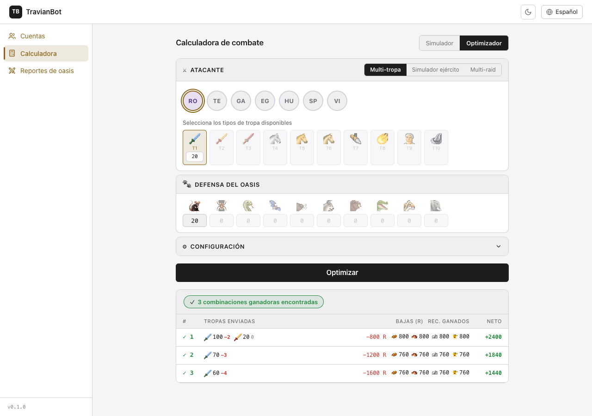

Calculadora de combate
Antes de lanzar un ataque, calcula exactamente qué ocurrirá: quién gana, cuántas tropas pierdes y cuántos recursos obtienes. Y si tienes un inventario real de tropas, el Optimizador busca automáticamente la combinación que mejor se adapta a tus objetivos.
1 Los dos modos de la calculadora
La calculadora tiene dos modos, accesibles con los botones Simulador y Optimizador en la esquina superior derecha. El modo activo aparece con fondo oscuro.

| Modo | Para qué sirve | Cuándo usarlo |
|---|---|---|
| Simulador | Introduces tú el ejército completo (atacante y defensor) y el sistema calcula el resultado exacto del combate | Cuando ya sabes qué tropas vas a enviar y quieres confirmar el resultado antes de atacar |
| Optimizador | Describes tu inventario (qué tipos de tropa tienes y cuántas) y el sistema busca la mejor combinación para ganar con el menor coste | Cuando no sabes cuántas tropas necesitas o quieres maximizar el beneficio de varias raids seguidas |
Si es la primera vez que atacas un oasis concreto, empieza por el Optimizador para saber qué tropas necesitas. Luego, si quieres afinar detalles (héroe, herrería, muro), usa el Simulador con esa combinación.
2 Simulador de combate
El Simulador usa la fórmula real de Travian T4.5 para calcular el resultado de un combate dado un ejército atacante y una defensa. El resultado es exacto: los mismos números que verás en el reporte real después del ataque.
Configurar el atacante
El bloque ATACANTE tiene cuatro elementos que rellenar:
| Elemento | Qué introducir |
|---|---|
| Saqueo / Ataque | Elige el tipo de ataque (ver sección Saqueo vs. Ataque). Por defecto está en Saqueo, que es el modo habitual para farmear oasis. |
| Bonus de alianza | El porcentaje de bonus de ataque que da tu alianza (entre 0% y 5%). Si no perteneces a ninguna alianza o no tiene bonus, déjalo en 0%. |
| Artefacto | Si tienes un artefacto activo que afecte a tus tropas, selecciónalo. Si no, deja Sin artefacto. |
| Héroe | Despliega el menú Héroe para introducir sus puntos de ataque y el bonus porcentual. Déjalo sin cambios si no envías héroe. |
| Tribu (botones circulares) | Selecciona tu tribu: RO (Romanos), TE (Teutones), GA (Galos), EG (Egipcios), HU (Hunos), SP (Espartanos) o VI (Vikingos). El icono de cada tropa cambia automáticamente. |
| Cantidad por tropa | Introduce el número de unidades de cada tipo. Puedes dejar en 0 las tropas que no envías. Los campos vacíos equivalen a 0. |
| Herrería (fila de cuadros pequeños) | Nivel de herrería de cada tropa (0 = sin mejora). Si tienes la herrería en nivel 10, ponlo aquí para que el cálculo use los stats mejorados. |
La tribu seleccionada en el bloque Atacante no tiene que coincidir con la que usas en el bloque Defensor. En Travian, el defensor puede ser de cualquier tribu o ser animales de la naturaleza (Nature).
Configurar el defensor
El bloque DEFENSOR representa los animales o tropas que defienden el oasis. La lógica es igual que en el atacante, con dos campos adicionales.
| Elemento | Qué introducir |
|---|---|
| Muro (nivel × multiplicador) | El primer número es el nivel del muro del defensor (0–20). El segundo, el bonus de stonemason (normalmente 1 si no hay cantero activo). Para oasis sin muro, deja ambos en 0. |
| Tribu defensora | Selecciona NA (Nature) para oasis. Si el defensor es un jugador, selecciona su tribu para que el bonus de muro sea el correcto. |
| Animales / tropas | Introduce la cantidad de cada tipo de animal o tropa que defiende. Para oasis, los animales Nature son los que ves en los reportes: rata, araña, serpiente, murciélago, jabalí, lobo, oso, cocodrilo, tigre, elefante. |
| + Añadir refuerzo | Si hay tropas reforzando el oasis desde una aldea aliada o del propio propietario, pulsa este botón para añadir una segunda formación defensora con su tribu y cantidades separadas. |
Si el defensor pertenece a las tribus Hunos, Espartanos o Vikingos, el bonus de muro se calcula con una aproximación (nivel × 3%) porque aún no hay datos completos de esas murallas. El resultado sigue siendo una buena estimación, pero puede diferir ligeramente del combate real.
Lanzar la simulación y leer el resultado
Una vez configurados ambos bandos, pulsa el botón negro Simular al pie de la pantalla. El resultado aparece justo debajo.

El panel de resultado muestra tres bloques:
| Bloque del resultado | Qué significa |
|---|---|
| Ganador + Ratio | Badge verde si gana el atacante, rojo si pierde. El ratio es la proporción de fuerzas: cuanto mayor, más holgada la victoria. Un ratio de 1.0 es victoria por los pelos; 32 significa que el atacante es 32 veces más fuerte que la defensa. |
| Tabla de tropas | Por cada tropa, muestra cuántas se enviaron y cuántas sobreviven. Las bajas aparecen en rojo. En modo Saqueo, el perdedor también tiene algunos supervivientes (reparto proporcional); en modo Ataque, el perdedor es aniquilado al 100%. |
| Tabla de recursos | Tres filas: recursos obtenidos de animales muertos (en verde), coste de las bajas propias (en rojo) y neto final. Si el neto es positivo (verde), el ataque es rentable en recursos; si es negativo (rojo), cuesta más en tropas de lo que obtienes. |
Un ratio muy alto (como 32) no significa cero bajas — en Saqueo ambos bandos siempre tienen alguna. Revisa la tabla de tropas para ver el coste real, no solo el ganador.
Cuándo usar Saqueo y cuándo Ataque

| Modo | Comportamiento de las bajas | Cuándo usarlo |
|---|---|---|
| Saqueo (por defecto) | Ambos bandos pierden tropas proporcionalmente. El ganador pierde menos, pero nunca pierde cero. El perdedor siempre tiene algún superviviente. | Farmear oasis repetidamente. Es el modo real que Travian usa en casi todos los ataques a oasis. |
| Ataque | El bando perdedor es destruido al 100%. Las catapultas dañan edificios del defensor y los arietes reducen el nivel del muro. | Asedios PvP, destruir la muralla de un enemigo o demoler edificios estratégicos. No es relevante para farmear oasis de animales. |
3 Optimizador de balance multiraid
El Optimizador analiza todas las combinaciones posibles de tus tropas y devuelve un ranking de las mejores opciones para ganar el combate al menor coste. Tiene tres modos según la información que puedas proporcionar.

Marcas qué tipos de tropa tienes disponibles (sin especificar cantidades). El optimizador busca la combinación mínima ganadora entre esos tipos. Útil cuando acabas de construir tropas y quieres saber si bastan.
Introduces cuántas unidades tienes de cada tipo. El optimizador respeta esos máximos y busca la subselección óptima. Útil para optimizar un ataque puntual con las tropas que tienes ahora mismo.
Igual que el Modo B, pero el sistema puntúa las oleadas pensando en repetirlas N veces. Una oleada pequeña que puedes repetir 30 veces puntúa mejor que una grande que solo puedes hacer 2. Añade columnas extra: cuántas veces puedes repetir la oleada y cuántas tropas te sobran.
Usar el Modo Multi-tropa
En este modo, las tropas son botones con icono que se activan o desactivan con un clic. Activa solo los tipos que tienes en tu aldea.

- Pulsa Optimizador en la esquina superior derecha.
- Verifica que el submodo activo es Multi-tropa.
- Selecciona tu tribu en los botones circulares.
- Haz clic en los iconos de tropa para activar los tipos que tienes disponibles. El icono activado queda resaltado con borde dorado. Puedes añadir también un número de referencia por cada tipo activo (el optimizador lo usará como cantidad máxima).
- En el bloque Defensa del oasis, introduce los animales que tiene el oasis según tu último reporte.
- Pulsa el botón negro Optimizar.
- Lee el ranking de resultados que aparece debajo (ver Interpretar el ranking).
Usar el Modo Simulador ejército
Este modo sustituye los botones de tipo por campos numéricos con dos filas: la primera para la cantidad disponible y la segunda para el nivel de herrería de ese tipo de tropa.

- Pulsa Simulador ejército en la cabecera del bloque Atacante.
- Introduce en la primera fila la cantidad real de cada tipo de tropa que tienes en la aldea ahora mismo.
- En la segunda fila (más pequeña, sin icono) introduce el nivel de herrería para ese tipo si lo has mejorado. Deja en blanco si no hay mejora.
- Rellena la Defensa del Oasis con los animales del oasis.
- Pulsa Optimizar.
El Modo B respeta tus cantidades como límite máximo: nunca te sugerirá enviar más tropas de las que tienes. Si introduces 80 espías y el optimizador recomienda enviar 50, los otros 30 se quedan en la aldea.
Usar el Modo Multi-raid
El Modo Multi-raid añade una sección especial de Rango de raids con dos campos opcionales: Mín y Máx.

| Campo de rango | Comportamiento |
|---|---|
| Mín y Máx vacíos (Auto) | El optimizador decide libremente cuántas veces repetir la oleada para maximizar el beneficio total. |
| Solo Mín | Quieres hacer al menos X raids. Las alternativas que no alcanzan ese mínimo quedan penalizadas al fondo del ranking. |
| Solo Máx | Quieres hacer como mucho X raids. Las tropas no consumidas aparecen en la columna "Sobrantes". |
| Mín = Máx | Quieres hacer exactamente X raids, ni una más ni una menos. |
Si usas Multi-raid para farmear un oasis todo el día, deja el rango en Auto la primera vez. El sistema te dirá cuántas raids son posibles con tu inventario actual. A partir de ahí ya puedes ajustar el rango según tus necesidades.
4 Interpretar el ranking del Optimizador
Tras pulsar Optimizar, aparece una tabla con las mejores combinaciones de tropas ordenadas por su puntuación global. Cada fila es una alternativa distinta que gana el combate.

| Columna | Qué significa |
|---|---|
| # | Posición en el ranking. La #1 es la mejor combinación según la puntuación total. |
| Tropas enviadas | Los tipos de tropa y las cantidades exactas que se envían. Los números rojos junto a cada tropa son las bajas previstas de ese tipo. |
| Bajas (R) | Coste total de las tropas que se pierden, expresado en recursos (suma del coste de producción de todas las bajas). Aparece en rojo. |
| Rec. Ganados | Recursos obtenidos de los animales muertos (madera, arcilla, hierro, trigo). Aparecen con iconos de recursos en verde. |
| Neto | Recursos ganados menos coste de bajas. Verde si el ataque es rentable, rojo si las tropas perdidas cuestan más de lo que obtienes. |
Cómo elegir entre las alternativas
El ranking #1 no siempre es la mejor opción para todos los jugadores. Ten en cuenta:
| Si tu prioridad es... | Elige la alternativa con... |
|---|---|
| Ganar más recursos por raid | Mayor Neto (columna verde más alta) |
| Perder el menor número de tropas | Menores Bajas (R) (número rojo más pequeño) |
| Enviar pocas tropas (conservar el ejército) | Alternativa con menos tropas en la columna Tropas enviadas |
| Multi-raid: repetir la oleada muchas veces | Mayor número de raids posibles (columna Raids en Modo C) |
Las alternativas del ranking son lo que en optimización se llama un frente de Pareto: ninguna domina a las demás en todos los objetivos al mismo tiempo. Por eso el sistema no tiene una sola respuesta correcta — te da opciones y tú eliges según lo que más te importe hoy.
Si el optimizador muestra el mensaje "No se encontraron combinaciones ganadoras", significa que con las tropas y defensa configuradas no hay forma de ganar el combate. En ese caso el ranking muestra igualmente las mejores aproximaciones (las que más se acercan a ganar) para que veas cuántas tropas te faltan.
5 Referencia rápida de campos
Campos del Atacante (Simulador)
| Campo | Valores posibles | Nota |
|---|---|---|
| Tipo de ataque | Saqueo / Ataque | Por defecto: Saqueo |
| Bonus alianza | 0%–5% | 0% si no aplica |
| Artefacto | Sin artefacto / varios | Solo si tienes artefactos activos |
| Héroe | Puntos de ataque + bonus % | Dejar en 0 si no envías héroe |
| Tribu | RO, TE, GA, EG, HU, SP, VI | Cambia los iconos y stats de tropas |
| Cantidad tropa | 0 – sin límite | 0 = tropa no enviada |
| Herrería (fila pequeña) | 0 – máximo por tribu | 0 = stats base sin mejora |
Campos del Defensor (Simulador)
| Campo | Valores posibles | Nota |
|---|---|---|
| Muro — nivel | 0–20 | 0 para oasis sin muro |
| Muro — stonemason | 0–5 (o 1 si sin cantero) | Multiplica el bonus de muro |
| Tribu defensora | NA, RO, TE, GA, EG, HU, SP, VI | NA = animales Nature (oasis) |
| Tropas / animales | 0 – sin límite | Ratas, arañas, etc. |
| + Añadir refuerzo | Botón | Añade un segundo defensor (refuerzos) |
Diferencias entre modos del Optimizador
| Modo | Entrada | Columnas extra en resultado |
|---|---|---|
| Multi-tropa (A) | Tipos de tropa activados (sin cantidad fija) | Ninguna |
| Simulador ejército (B) | Cantidades reales de inventario | Ninguna |
| Multi-raid (C) | Cantidades + rango de raids opcional | Raids posibles, Tropas sobrantes, Totales acumulados |